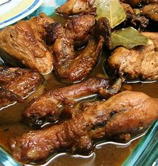

Adobong manok is a traditional stew originating from the Philippines. This type of Filipino adobo is made with a combination of chicken, garlic, onions, bay leaves, peppercorns, oil, brown sugar, soy sauce, and white vinegar. The chicken is cut into pieces and marinated in a mixture of all the mentioned ingredients (except oil).